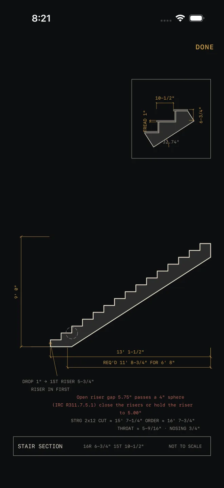

Reading the drawing
Most calculators draw what they just worked out: the stair in section, the rafter on its plate, the slab with its thickness. The drawing sits directly under the results and redraws every time you change an input. Use it to check that the numbers describe the thing you are about to build, before you cut anything.
Step by step
 1
2
5
1
2
5

2 5- Scroll down past the results to the drawing. At its normal size a drag on it scrolls the screen, the same as anywhere else.
- Pinch out to zoom in. The small boxed detail in the corner is the usual reason. You can go up to six times the normal size.
- Once you are zoomed in, drag with one finger to move around the drawing. It stops at the edges, so you cannot lose the drawing off the side.
- Double-tap to go back to the normal size. Tap a dimension to pick it out on the drawing; tap it again, or tap an empty spot, to clear it.
- Tap the expand button in the strip above the drawing to open it on the whole screen. Pinch, drag and double-tap work the same there. Tap DONE to go back to the calculator.
What is on the drawing
 1
2
3
4
1
2
3
4
- Dimensions. The gold figures are the same values the results show, written the same way. A figure with ≈ in front has been rounded for display.
- Detail inset. A box in one corner shows a small part of the work enlarged, such as one step of a stair or the birdsmouth of a rafter. On some calculators the inset is left off when the drawing is too cramped to carry it.
- Notes. Short lines under the drawing restate the settings it was drawn from. A failed check is written here in red, the same as in the results.
- Title block. The strip along the bottom names the drawing and carries NOT TO SCALE. The drawing is fitted to your screen, not drawn at a ratio. Work from the written dimensions. Do not measure off the glass.
Need something true to size? Stairs and Arc can print a full-size paper
template, and Angle Tools prints a full-size angle. See
Cut sheets and 1:1 templates and
Angle Tools.
With VoiceOver
The drawing reads as one image with a spoken summary of what it shows. It has an action named "Open full screen", and the expand button is labelled "Open drawing full screen".
If it doesn't work
- Dragging scrolls the screen instead of moving the drawing. The drawing only pans once it is zoomed in. Pinch out first, then drag.
- It will not zoom any further. Six times is the limit. Open the drawing full screen and zoom there for the largest view.
- The drawing is stuck off to one side. Double-tap it to reset the zoom and position.
- The labels on the drawing are smaller than the rest of the screen. At the largest text sizes the drawing's own labels stop growing, so they do not run into each other. Open the drawing full screen and pinch instead.
- There is no drawing. Cut List Optimizer, Unit Converter and Water Heater have nothing to draw, so the screen goes straight from results to the material list.
Related
- Cut sheets and 1:1 templates — the same drawing on paper
- Mark-out and speak
- Angle Tools
- Stairs
- Roof Rafter